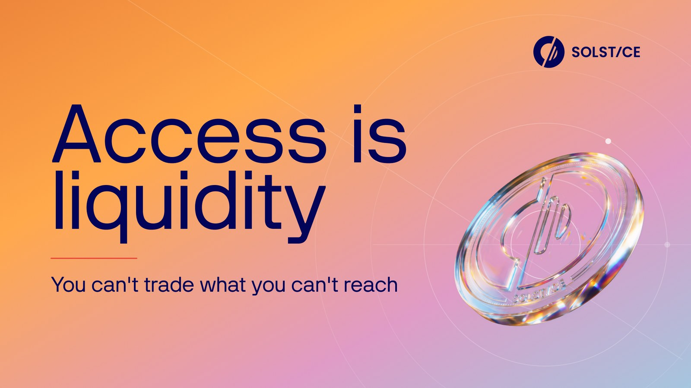
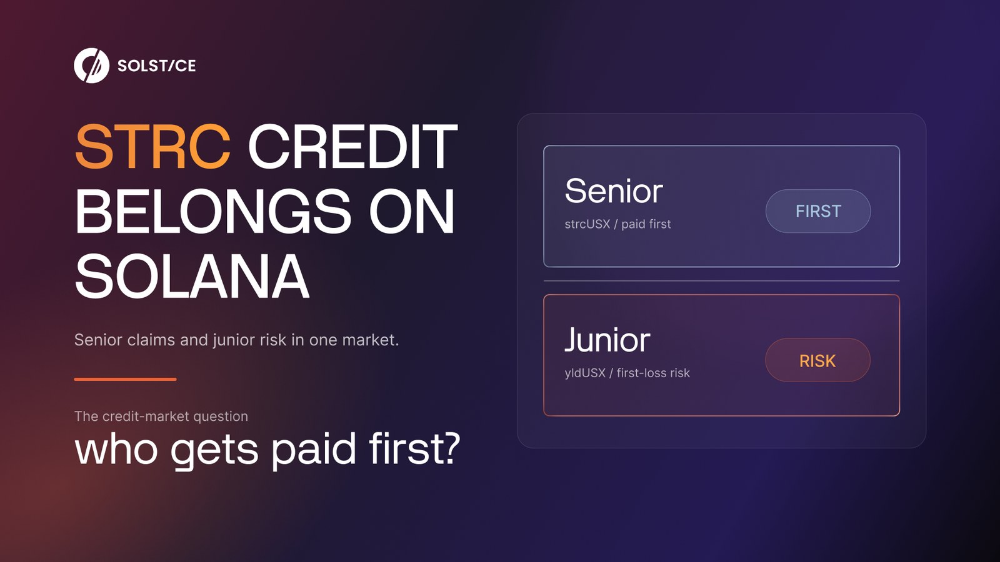
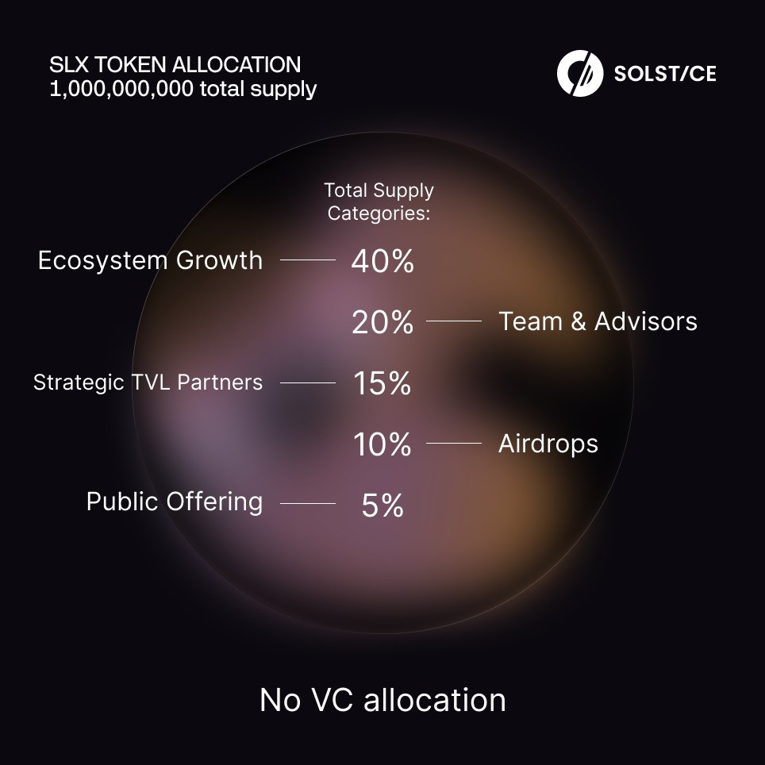
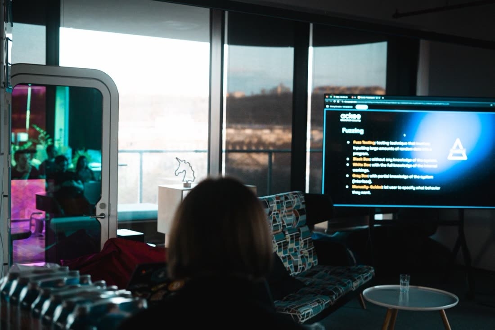
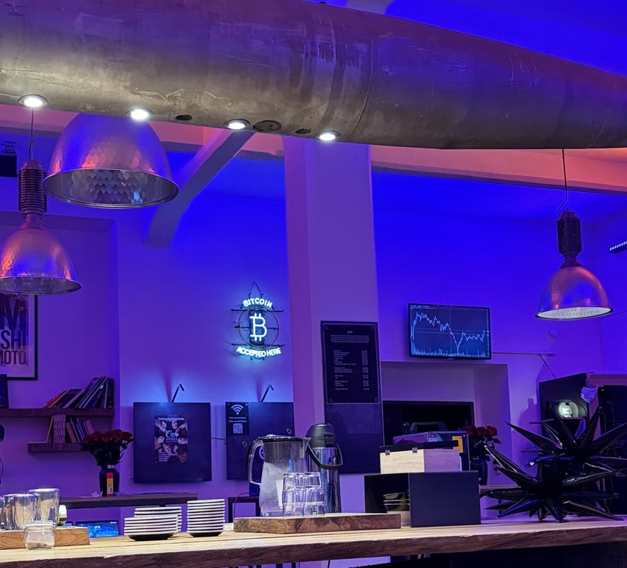
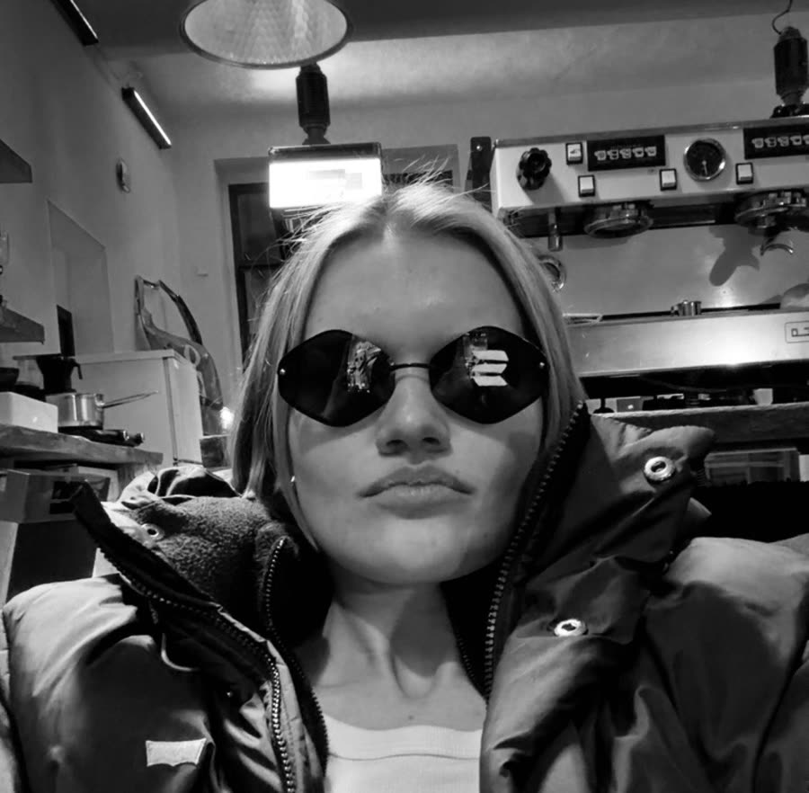
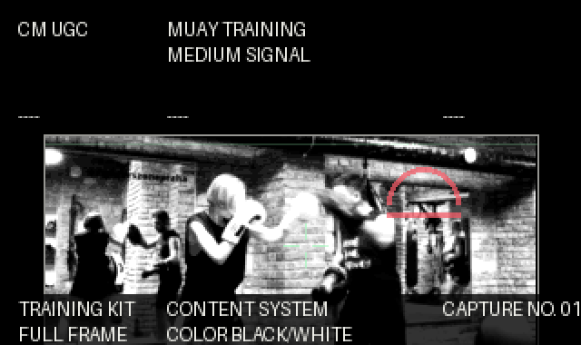

strcUSX web match
Web-match motion piece with a stronger visual hook, campaign texture and a launch-ready Solstice system frame.
Creative marketer / designer / UGC creator
I’m Alisa, a Czechia-based creative working across campaigns, motion, social content and new digital products. I connect sharp visuals with audience logic, AI-assisted workflows and ideas that feel native to culture, not pasted onto it.
Designer in a young modern agency, currently working with large crypto projects, emerging tech products and the kind of digital worlds where details actually matter.
I speak English, Russian and Czech. I’m open, funny, street, curious, and very into asking the extra question before pretending everything is obvious.
A few examples, not the whole archive. Overall, I work across landing pages, announcements, social posts and motion pieces.
Web-match motion piece with a stronger visual hook, campaign texture and a launch-ready Solstice system frame.
Promo cut for the strcUSX product story with Strategy in the frame: warm credit-world visuals, premium character energy and a campaign-ready social loop.
Motion concept for the two-tranche strcUSX structure: senior sits higher in the claim order with cleaner yield and lower risk exposure, while junior takes first-loss volatility and earns the residual upside when the strategy performs.
A short reveal built around technical trust: zero slashing, validator infrastructure and a clean multi-chain landing.
A focused campaign loop with reward messaging, soft brand motion and a clear social announcement frame.
A short motion piece for a crypto product narrative: clean, bright, direct and built around a fast visual hook.
A warmer Solstice announcement piece: bright reveal, campaign energy and a clean reward-focused landing frame.
A clean announcement loop for the SLX litepaper: editorial motion, product context and a polished launch-frame feel.
Short campaign motion for a product ecosystem: clean structure, soft depth and a quick read for social-first launch content.
Compact product campaign motion with a clean brand system, readable strategy message and a polished social landing frame.

Static campaign banner with a clean product claim, bright gradient system and a polished token visual.

Landing-style hero concept explaining senior and junior risk in a simple, readable visual system.

Token allocation graphic with clear hierarchy, soft depth and a direct no-VC-allocation proof point.



I help organize a Web3 room in Prague where builders, creatives and crypto-curious people meet IRL. It is where my design path first got loud: logos, posts, visual bits, taking initiative before I had the title.
Small start, bigger level now: I bring that same curiosity into larger Web3 campaigns at a marketing agency, with sharper taste, better systems and more nerve.

I love classical boxing and Muay Thai. To me it’s a beautiful martial art built on precision, timing and control.
I’m drawn to fashion, sport, digital culture and anything with a strong visual code and a little edge.
I don’t want to be tied to one place. I want to travel, attend conferences, collect new experience and bring fresh signals back into the work.